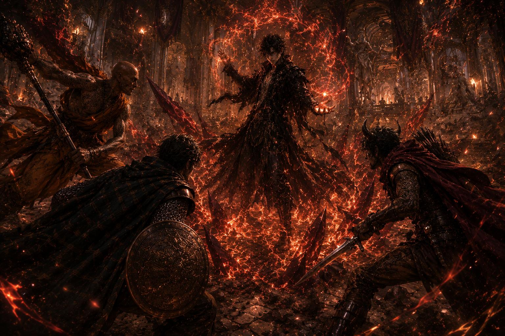

The chronicle of five travelers and how their paths converged บันทึกแห่งการเดินทางของนักผจญภัยทั้งห้าสู่ Borderland
Before their names were remembered across the land of Borderland, the five of them were merely travelers — each searching for something in their own lives.
Some were running from the past.
Some were trying to prove themselves.
Some were searching for the meaning of being alive.
And without realizing it, their paths slowly began to converge.
ก่อนที่ชื่อของพวกเขาจะเริ่มถูกจดจำในดินแดน Borderland ทั้งห้าคนเป็นเพียงผู้เดินทางที่ต่างกำลังตามหาบางสิ่งในชีวิตของตนเอง
บางคนกำลังหนีจากอดีต
บางคนกำลังพยายามพิสูจน์ตัวเอง
บางคนกำลังค้นหาความหมายของการมีชีวิตอยู่
และโดยไม่รู้ตัว เส้นทางของพวกเขาก็ค่อย ๆ มาบรรจบกัน
Aython Ashvail Aurelius, a young nobleman once known as the "Prince of the Night," was cut off from his entire inheritance by his mother and cast out into the world. Despite being left penniless, he continued to live as if he were still hosting high-society galas.
In a small tavern, Aython tried to persuade the owner to give him free drinks — claiming that someday this establishment might become a hotspot among the aristocracy.
Watching from the corner of the room was Jen: a thief, a con artist, a self-proclaimed and thoroughly enlightened priest. At first, Jen thought Aython was just a useless, washed-up noble. But the more he observed, the more intrigued he became.
Even with no money, no power, and almost nothing left, Aython still treated every person with a grace that made them feel valued.
Instead of betraying one another, the two began to work together. Aython used his high-class network, his ability to read people, and social circle intel to select their targets. Jen was the man on the ground — forging documents, stealing assets, infiltrating manors, and finding the escape routes.
The two became a strangely perfect pair: one a nobleman with no money, the other a man of faith who doesn't believe in God — yet somehow preaches with incredible conviction.
Aython Ashvail Aurelius ขุนนางหนุ่มผู้เคยเป็น "Prince of the Night" ถูกมารดาของตนตัดออกจากทรัพย์สินทั้งหมดและส่งออกเดินทางสู่โลกภายนอก แม้จะกลายเป็นคนไร้เงิน เขายังคงใช้ชีวิตราวกับตนเองยังเป็นเจ้าภาพของงานเลี้ยงระดับชนชั้นสูง
ในร้านเหล้าเล็ก ๆ แห่งหนึ่ง Aython พยายามโน้มน้าวเจ้าของร้านให้เลี้ยงเหล้า โดยอ้างว่าสักวันร้านแห่งนี้อาจกลายเป็นสถานที่ยอดนิยมในหมู่ขุนนางได้
ชายอีกคนที่นั่งเฝ้ามองอยู่มุมร้านคือ Jen — หัวขโมย นักต้มตุ๋น ผู้แฝงตัวเป็นนักบวช (ที่รู้แจ้งอย่างถ่องแท้) ตอนแรก Jen คิดว่า Aython เป็นเพียงขุนนางตกอับไร้ประโยชน์ แต่ยิ่งสังเกต เขากลับยิ่งสนใจ
แม้จะไม่มีเงิน ไม่มีอำนาจ และแทบไม่เหลืออะไรเลย Aython ก็ยังปฏิบัติต่อผู้คนด้วยความสง่างามราวกับทุกคนมีคุณค่า
แทนที่จะหักหลังกัน ทั้งสองกลับเริ่มร่วมมือกัน Aython ใช้เครือข่ายชนชั้นสูง การอ่านคน และข้อมูลจากวงสังคมเพื่อเลือกเป้าหมาย ส่วน Jen คือคนลงมือจริง — ปลอมเอกสาร ลักทรัพย์ แทรกซึมคฤหาสน์ และหาทางหนีออกมา
ทั้งสองเริ่มกลายเป็นคู่หูที่เข้ากันได้อย่างประหลาด หนึ่งคือขุนนางผู้ไม่มีเงิน อีกหนึ่งคือคนศรัทธาที่ไม่เชื่อในพระเจ้า แต่สามารถถ่ายทอดให้ผู้คนได้อย่างน่าเลื่อมใส
Kael Vorn continued to hunt for traces of an enemy from his past. He was once a soldier who believed in duty and order, but war and betrayal had stripped him of his faith in people.
The latest lead brought him to a nobleman's manor. That night, Vorn cold-bloodedly slaughtered everyone who stood in his way — only to find, upon reaching the treasure room, that his target wasn't there.
In that same room, Aython and Jen were busy robbing the place. Amidst piles of corpses and a treasure room filled with fakes, Aython was complaining about the owner's "terrible taste" rather than being shocked by the scene before him.
Vorn stared at the two of them in confusion. He had just endured a night of death — and these two men were arguing about the value of art in the middle of a bloodbath.
Even so, the three eventually ended up traveling together. Initially, Vorn only hoped to exploit their information-gathering abilities, networks, and powers of persuasion to track down his quarry. But adventuring with these two eccentrics brought him a strange, unfamiliar sense of enjoyment.
Kael Vorn ยังคงออกตามล่าร่องรอยของศัตรูจากอดีต เขาเคยเป็นทหาร เคยเชื่อในหน้าที่และระเบียบ แต่สงครามและการทรยศทำให้เขาเลิกเชื่อในผู้คน
เบาะแสล่าสุดนำเขามาถึงคฤหาสน์ขุนนางแห่งหนึ่ง ในคืนนั้น Vorn สังหารทุกคนที่ขวางทางอย่างเลือดเย็น แต่เมื่อไปถึงห้องสมบัติ เขากลับพบว่าเป้าหมายไม่ได้อยู่ที่นี่
และในห้องเดียวกันนั้น Aython กับ Jen ก็กำลังปล้นคฤหาสน์อยู่ ท่ามกลางกองศพและห้องสมบัติที่เต็มไปด้วยของปลอม Aython กลับบ่นถึง "รสนิยมอันเลวร้าย" ของเจ้าของคฤหาสน์ มากกว่าจะตกใจกับสถานการณ์ตรงหน้า
Vorn มองทั้งสองด้วยความสับสน เขาเพิ่งผ่านค่ำคืนแห่งความตายมา แต่ชายสองคนนี้กลับเถียงกันเรื่องคุณค่าของงานศิลป์กลางกองศพ
อย่างไรก็ตาม สุดท้ายทั้งสามกลับร่วมเดินทางด้วยกัน ในช่วงแรก Vorn หวังเพียงใช้ประโยชน์จากความสามารถในการหาข้อมูล เครือข่าย และทักษะในการเกลี้ยกล่อมเพื่อให้ได้สิ่งที่ต้องการ แต่การผจญภัยกับคนพิลึกทั้งสองกลับสร้างความเพลิดเพลินให้เขาอย่างน่าประหลาด
Anuchit Thepsuang is a warrior monk traveling in search of life's meaning. After losing his temple and the people most dear to him, he began to sense that "something" was hidden in this world — something ordinary humans could not understand.
That journey led him to a city filled with spiritual training courses, meditation retreats, and teachings on inner peace. But behind it all was a scam orchestrated by Jen and Aython.
Even though it was all a lie, what confused Anuchit most was that the people who came there were actually healed. Many left with smiles. Many found the will to keep living.
Anuchit began to understand: sometimes, hope doesn't have to be perfect. As long as it gives people the strength to keep moving forward, it still has value. And without realizing it, he began to become part of the group.
After it was all over, the four of them fled the city with a vast sum of money. For the first time, they felt that life might actually be getting better.
But during their journey, a violent storm at sea battered their ship. Giant waves smashed the vessel to pieces amidst darkness and thunder. Everyone survived — but their belongings, their money, and everything they had just gained sank to the bottom of the sea.
They lost everything once again. And that made the four of them begin to understand a certain truth about the traveler's life: no matter how much you try to hold on, the world can take it away at any moment.
Anuchit Thepsuang คือพระนักสู้ผู้เดินทางเพื่อตามหาความหมายของชีวิต หลังสูญเสียวัดและผู้คนสำคัญ เขาเริ่มสัมผัสได้ว่ามี "บางสิ่ง" ซ่อนอยู่ในโลกใบนี้ บางสิ่งที่มนุษย์ทั่วไปไม่อาจเข้าใจ
การเดินทางนั้นนำเขามาถึงเมืองแห่งหนึ่งซึ่งเต็มไปด้วยคอร์สฝึกจิต การนั่งสมาธิ และคำสอนเรื่องความสงบ แต่เบื้องหลังทั้งหมดกลับเป็นการต้มตุ๋นของ Jen และ Aython
แม้ทั้งหมดจะเป็นเรื่องโกหก สิ่งที่ทำให้ Anuchit สับสนคือผู้คนที่มาที่นี่กลับ "ได้รับการเยียวยาจริง" หลายคนกลับไปพร้อมรอยยิ้ม หลายคนกลับมีกำลังใจใช้ชีวิตต่อ
Anuchit จึงเริ่มเข้าใจว่า บางครั้ง ความหวังอาจไม่ได้สมบูรณ์แบบ แต่ตราบใดที่มันช่วยให้ผู้คนมีแรงเดินต่อไปได้ มันก็ยังมีคุณค่าอยู่ และโดยไม่รู้ตัว เขาก็เริ่มกลายเป็นส่วนหนึ่งของกลุ่ม
หลังจากทุกอย่างจบลง ทั้งสี่หลบหนีออกจากเมืองพร้อมเงินจำนวนมหาศาล เป็นครั้งแรกที่พวกเขารู้สึกว่า ชีวิตอาจกำลังเริ่มดีขึ้นจริง ๆ
แต่ระหว่างการเดินทาง พายุรุนแรงกลางทะเลกลับพัดถล่มเรือของพวกเขา คลื่นยักษ์ซัดเรือแตกออกเป็นเสี่ยง ๆ ท่ามกลางความมืดและเสียงฟ้าร้อง ทุกคนรอดชีวิต แต่ทรัพย์สิน เงินทอง และทุกอย่างที่พวกเขาเพิ่งได้มาทั้งหมด กลับจมหายลงสู่ทะเล
พวกเขาสูญเสียทุกอย่างอีกครั้ง และนั่นทำให้ทั้งสี่เริ่มเข้าใจความจริงบางอย่างเกี่ยวกับชีวิตของนักเดินทาง — ไม่ว่าพยายามคว้าอะไรไว้มากเพียงใด โลกก็สามารถพรากมันไปได้ทุกเมื่อ
Kael Veranth, a mage with dragon blood, continued his journey in search of answers to the "voice" that had echoed in his head his entire life — a whisper from something far beyond, a feeling that he didn't belong in this world, and a power he couldn't control.
After his power burned down his own village in childhood, Veranth began to believe that perhaps "death" was the only path to the answers he sought.
At the same time, the party of four was planning to heist an ancient museum. But before they could act, another group of bandits struck first. Aython saw an opportunity immediately — he quickly announced to the crowd that they would protect the city's treasures.
Vorn was the first to act, his arrow piercing the bandit leader's neck from a distance. Anuchit charged directly into the fray. Jen used magic to support and heal the wounded. In no time, the robbery was thwarted. The people began to see the four as heroes.
But before it was over, a man appeared on the museum's high balcony: Kael Veranth. The moment he saw the four, he sensed that this group was "different" — and perhaps strong enough to actually kill him.
Deep red flames exploded from his palms. The tremors caused the entire museum to begin collapsing. Stone pillars cracked, the ceiling caved in, and centuries-old artifacts were being destroyed.
But what shocked Aython most wasn't Veranth's power — it was the history being lost before his eyes. Without hesitation, he lunged to protect a display case. A stone pillar collapsed on him, knocking him unconscious.
Kael Veranth จอมเวทย์ผู้มีสายเลือดมังกร ยังคงออกเดินทางเพื่อตามหาคำตอบของ "เสียง" ที่ดังอยู่ในหัวมาตลอดชีวิต เสียงกระซิบจากบางสิ่งอันไกลโพ้น ความรู้สึกว่าตนเองไม่ควรอยู่บนโลกใบนี้ และพลังที่ไม่อาจควบคุมได้
หลังจากพลังของเขาเผาหมู่บ้านตนเองในวัยเด็ก Veranth ก็เริ่มเชื่อว่า บางที "ความตาย" อาจเป็นทางเดียวที่จะนำเขาไปสู่คำตอบ
ในเวลาเดียวกัน ปาร์ตี้ทั้งสี่กำลังวางแผนปล้นพิพิธภัณฑ์โบราณแห่งหนึ่ง แต่ก่อนจะลงมือ กลุ่มโจรอีกกลุ่มกลับบุกเข้าปล้นเสียก่อน Aython มองเห็นโอกาสทันที เขารีบประกาศต่อหน้าผู้คนว่า พวกเขาจะช่วยปกป้องสมบัติของเมือง
Vorn ลงมือเป็นคนแรก ลูกธนูของเขาพุ่งทะลุคอหัวหน้าโจรจากระยะไกล Anuchit เข้าปะทะกลางวงต่อสู้โดยตรง ส่วน Jen ใช้เวทมนตร์สนับสนุนและรักษาผู้บาดเจ็บ ภายในเวลาไม่นาน การปล้นก็ถูกหยุดลง ผู้คนเริ่มมองทั้งสี่เป็นวีรบุรุษ
แต่ก่อนทุกอย่างจะจบลง ชายคนหนึ่งกลับปรากฏตัวขึ้นบนระเบียงสูงของพิพิธภัณฑ์ — Kael Veranth ทันทีที่เห็นทั้งสี่ เขาก็สัมผัสได้ว่าคนกลุ่มนี้ "แตกต่าง" และบางที อาจแข็งแกร่งพอจะฆ่าเขาได้จริง ๆ
เปลวเพลิงสีแดงเข้มระเบิดออกจากฝ่ามือของเขา แรงสั่นสะเทือนทำให้พิพิธภัณฑ์ทั้งหลังเริ่มพังถล่ม เสาหินแตกร้าว เพดานเริ่มถล่ม โบราณวัตถุหลายร้อยปีกำลังถูกทำลาย
แต่สิ่งที่ทำให้ Aython ตกใจที่สุด ไม่ใช่พลังของ Veranth แต่คือประวัติศาสตร์ที่กำลังสูญหายไปต่อหน้าต่อตา โดยไม่ลังเล เขากระโจนเข้าไปปกป้องตู้จัดแสดง ก่อนจะถูกเสาหินถล่มใส่จนหมดสติ
Vorn, Jen, and Anuchit had to join forces to fight Veranth amidst the crumbling museum. His magic was intense, striking from every direction — fire could erupt from the floor, walls, or even the air at any moment.
Jen used illusions and magical shields to clear a path. Vorn searched for openings to attack from a distance. Anuchit was the only one who kept walking forward, straight through the flames.
Eventually, the three managed to reach Veranth. Vorn pinned the mage to the ground, weapon poised to deliver a killing blow — but Anuchit raised his hand to stop him. In Veranth's eyes, he saw not malice but emptiness: the look of someone who had lost their reason to live long ago.

Anuchit believed that to kill someone who lacked even the will to live would trap that soul in suffering forever. Vorn disagreed. And in the moment the three were arguing, Veranth seized the chance to counterattack.
A massive explosion of fire erupted from his body. Vorn and Jen were thrown back by the blast, too injured to fight on. Inside the collapsing hall, only Anuchit and Veranth remained.
Facing each other in a sea of fire, the final battle began. But as they fought, Veranth began to understand something. Anuchit, too, was someone who sensed things the world didn't understand.
The difference was this: Veranth had chosen to wait for death to find his answers — while Anuchit had chosen to live to find them, using every breath, every wound, and every day still given to him to keep moving forward.
For the first time in years, Veranth began to hesitate about his own death. Finally, the flames around him slowly died out. He chose to keep living.
Vorn, Jen และ Anuchit ต้องร่วมมือกันต่อสู้กับ Veranth ท่ามกลางพิพิธภัณฑ์ที่กำลังพังทลาย พลังเวทของ Veranth รุนแรงและโจมตีได้จากทุกทิศทาง ไฟสามารถปะทุขึ้นจากพื้น กำแพง หรือแม้แต่อากาศรอบตัวได้ทุกเมื่อ
Jen ใช้เวทภาพลวงตาและเกราะเวทเพื่อเปิดทาง Vorn คอยหาจังหวะโจมตีจากระยะไกล ส่วน Anuchit คือคนเดียวที่ยังคงเดินฝ่าเปลวเพลิงเข้าไปข้างหน้า
ท้ายที่สุด ทั้งสามก็สามารถเข้าถึงตัว Veranth ได้สำเร็จ Vorn กดจอมเวทย์ลงกับพื้น พร้อมปลายอาวุธที่สามารถปลิดชีวิตได้ทุกเมื่อ แต่ Anuchit กลับยกมือห้าม เขามองเห็นในดวงตาของ Veranth ไม่ใช่ความอาฆาต แต่เป็น "ความว่างเปล่า" สายตาของคนที่สูญเสียความหมายของการมีชีวิตไปนานแล้ว
Anuchit เชื่อว่า หากสังหารผู้ที่ไร้แม้แต่เจตจำนงจะมีชีวิต วิญญาณของคนผู้นั้นอาจถูกกักขังอยู่กับความทุกข์ตลอดไป Vorn ไม่เห็นด้วย และในจังหวะที่ทั้งสามกำลังถกเถียงกัน Veranth ก็ฉวยโอกาสสวนกลับทันที
เปลวเพลิงมหาศาลระเบิดออกจากร่างของเขา Vorn และ Jen ถูกแรงระเบิดซัดกระเด็น บาดเจ็บจนไม่สามารถต่อสู้ต่อได้ ภายในโถงที่กำลังพังทลาย จึงเหลือเพียง Anuchit และ Veranth
ทั้งสองเผชิญหน้ากันท่ามกลางทะเลเพลิง การต่อสู้ครั้งสุดท้ายจึงเริ่มต้นขึ้น แต่ยิ่งต่อสู้ Veranth ก็ยิ่งเข้าใจบางอย่าง — Anuchit เองก็เป็นคนที่สัมผัสได้ถึงบางสิ่งที่โลกทั่วไปไม่เข้าใจเช่นเดียวกัน
แต่สิ่งที่แตกต่างกันคือ Veranth เลือกเฝ้ารอความตายเพื่อค้นหาคำตอบ ขณะที่ Anuchit กลับเลือกใช้ชีวิตเพื่อตามหามัน ใช้ทุกลมหายใจ ทุกบาดแผล และทุกวันที่ยังมีอยู่ เพื่อเดินหน้าต่อไป
เป็นครั้งแรกในรอบหลายปี Veranth เริ่มลังเลต่อความตายของตนเอง และในที่สุด เปลวเพลิงรอบตัวก็ค่อย ๆ ดับลง เขาเลือกที่จะมีชีวิตอยู่ต่อ
After everything that happened, the museum was surrounded by troops from across the city. Shouts and footsteps echoed over the crumbling ruins while flames continued to lick at stone pillars and artifact displays.
Aython, having just regained consciousness, took only a moment to assess the situation. He quickly led everyone to the museum's basement, then opened the entrance to a secret tunnel hidden behind an old stone wall.
These tunnels weren't ancient myths — they were knowledge passed down through noble families since the old days. In an era where a city could be besieged at any moment, the manors, museums, and key buildings of the ruling class were always built with escape routes. As an heir of House Aurelius, Aython had grown up with this knowledge since childhood.
The four escaped through the underground tunnels while the troops above continued to blockade the area, completely unaware that their targets had already slipped away. The tunnel stretched all the way to the coast outside the city.
Once everyone successfully made it outside, they began preparing a boat for immediate departure. But during the process, they discovered that Veranth had followed them out. No one knew when he had started following. The mage simply stood silently not far away, as if even he wasn't sure what to do next.
Vorn didn't trust him at all. To Vorn, someone who had nearly killed them all shouldn't be left to wander without any kind of guarantee. On the contrary, Anuchit believed Veranth deserved another chance — he saw in the mage not just a danger, but a person who had been lost in his own suffering for far too long.
Jen didn't take a clear stance. Even though he still didn't fully trust Veranth, he didn't oppose the group's decision. Meanwhile, Aython didn't care much about trust — to him, having a powerful mage along for the journey was far more useful than letting the man wander off aimlessly.
In the end, no one drove Veranth away. And Veranth himself simply followed them onto the boat in silence.
That night, the small junk boat left the coast with five travelers:
No one knew where the destination lay. But everyone was journeying toward the same place — the land called Borderland.
หลังเหตุการณ์ทั้งหมด พิพิธภัณฑ์ถูกกองทหารทั้งเมืองปิดล้อม เสียงตะโกนและฝีเท้าดังสะท้อนอยู่เหนือซากอาคารที่กำลังพังทลาย ขณะที่เปลวไฟยังคงลุกไหม้อยู่ตามเสาหินและชั้นจัดแสดงโบราณวัตถุ
Aython ซึ่งเพิ่งฟื้นคืนสติขึ้นมา ใช้เวลาเพียงไม่นานในการประเมินสถานการณ์ เขารีบนำทุกคนลงไปยังชั้นใต้ดินของพิพิธภัณฑ์ ก่อนเปิดทางเข้าสู่อุโมงค์ลับที่ซ่อนอยู่หลังผนังหินเก่า
อุโมงค์เหล่านี้ไม่ใช่ตำนานโบราณ แต่เป็นสิ่งที่ชนชั้นสูงหลายตระกูลเรียนรู้มาตั้งแต่อดีต ในยุคที่เมืองสามารถถูกปิดล้อมได้ทุกเมื่อ คฤหาสน์ พิพิธภัณฑ์ และอาคารสำคัญของชนชั้นปกครองมักถูกสร้างทางหลบหนีเอาไว้เสมอ และในฐานะทายาทแห่ง House Aurelius Aython เติบโตมากับความรู้เหล่านี้ตั้งแต่วัยเด็ก
ทั้งสี่หลบหนีผ่านอุโมงค์ใต้ดิน ขณะที่กองทหารด้านบนยังคงปิดล้อมพื้นที่โดยไม่รู้เลยว่าเป้าหมายได้หลบหนีออกมาแล้ว อุโมงค์ทอดยาวออกไปจนถึงชายฝั่งนอกเมือง
เมื่อทุกคนออกมาถึงด้านนอกได้สำเร็จ พวกเขาจึงเริ่มเตรียมเรือเพื่อออกเดินทางทันที แต่ระหว่างนั้นเอง พวกเขากลับพบว่า Veranth เดินตามออกมาด้วย ไม่มีใครรู้ว่าเขาเริ่มเดินตามมาตั้งแต่เมื่อไร จอมเวทย์เพียงยืนเงียบอยู่ไม่ไกล ราวกับแม้แต่ตัวเขาเองก็ยังไม่แน่ใจว่าควรทำอะไรต่อไป
Vorn ไม่ไว้วางใจเขาเลย สำหรับ Vorn คนที่เกือบสังหารพวกตนทั้งหมดไม่ควรถูกปล่อยไว้โดยไม่มีหลักประกันใด ๆ ตรงกันข้าม Anuchit กลับเชื่อว่า Veranth ยังควรได้รับโอกาสอีกครั้ง เขามองเห็นในตัวจอมเวทย์ ไม่ใช่เพียงอันตราย แต่คือคนผู้หนึ่งที่กำลังหลงทางอยู่กับความทุกข์ของตัวเองมานานเกินไป
ส่วน Jen ไม่ได้แสดงท่าทีชัดเจนนัก แม้ลึก ๆ เขาจะยังไม่เชื่อใจ Veranth แต่ก็ไม่ได้คัดค้านการตัดสินใจของกลุ่ม ขณะที่ Aython ไม่ได้ใส่ใจเรื่องความไว้ใจมากเท่าคนอื่น สำหรับเขา การมีจอมเวทย์ทรงพลังร่วมเดินทางย่อมมีประโยชน์มากกว่าการปล่อยให้อีกฝ่ายหายไปโดยไร้จุดหมาย
ท้ายที่สุด ไม่มีใครขับไล่ Veranth ออกไป และ Veranth เองก็เพียงเดินตามพวกเขาขึ้นเรืออย่างเงียบงัน
ในคืนนั้น เรือสำเภาลำเล็กจึงออกจากชายฝั่งพร้อมผู้เดินทางทั้งห้าคน
ไม่มีใครรู้ว่าปลายทางอยู่ที่ใด แต่ทุกคนต่างกำลังออกเดินทางไปสู่สถานที่เดียวกัน — ดินแดนที่ชื่อว่า Borderland
The land of Borderland awaits — and the fate of the five has only just begun. ดินแดน Borderland รอคอยพวกเขาอยู่ — และชะตากรรมของทั้งห้าเพิ่งจะเริ่มต้น
Read Session I อ่าน Session I